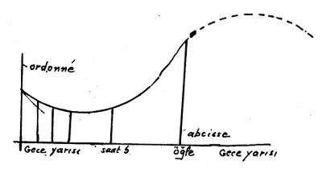

Biyolojide tecrübe metodu canlının kompleks yapısını kavrayacak tarzda hazırlanmış olmalıdır. Bunun için biyolojide gözlem, tecrübe ve deneyin tatbik şekilleri, bunlardan çıkaracağımız sonuçlar için kurduğumuz ihtimaliyet kadroları fizikte kullandıklarımızdan farklı olacaktır.
I. Gözlem: Biyolojide gözlem dış gözlem veya iç gözlem olabileceği gibi, statik veya dinamik gözlem de olabilir. Anatominin ilk şeklinde beden bir yapı gibi görünür: Bunu inceleyen gözlem, konuya göre bir çeşit dış gözlemdir. Kadavranın parçalanması, otopsi yahut canlı organizma üzerinde ameliyat sureti ile incelemeler ise bedenin içyapısına nüfuz etmektedir. Bu ikinci gözlem radyoskopi, radyografi gibi mükemmel fizik aletleriyle tamamlanabilir. Fakat beden yalnız bir yapı değil, başka bakımdan işleyiş tarzı araştırılan bir çeşit makine gibi de görülebilir. Böylece kasların -adalelerin- kasılışı, kan dolaşımı, sinir gerginliği vs. gibi olaylar incelenir. Bir de bedeni bir çeşit laboratuvar farz etmek ve oradaki bütün kimyevi tepkileri incelemek mümkündür ki, hayati kimyanın, sindirim kimyasının yaptığı iş budur.
II. Deney: Biyolojide kullanılan deney fiziktekinden gerek konusu, gerek aletleri, gerekse deneyi tatbik edecek şartları bakımından ayrılır. Hayati olay -Auguste Comte’un dediği gibi- yalnız basitlik ve karışımlık, yani karmaşıklık ve derece farkı ile ayrılmaz; aralarında öz farkı da vardır. Hayati olayda tabiatın maddeden başka bir düzeni, başka bir varlığı karşısındayız. Canlı varlık bitkiden insana kadar bütün derecelerinde, kendi başına ele alınan tecanüslü ve bağımsız bir şey değildir. Fizik ve kimya olaylarını birbirinden istediğimiz kadar, istediğimiz sayıda da ayırabiliriz. Her biri ayrıca incelenebilir. Canlı varlık ise mutlaka çevresi ile birlikte göz önüne alınmalıdır. Çevresinden ayrı sırf biyolojik bir unsur olarak canlı varlık yoktur ve böyle bir varlık biyoloji için inceleme konusu olamaz. Canlının çevresi ile münasebetleri de bitkide, hayvanda ve insanda birbirinden farklıdır. Uexküll gösterdi ki, bitki ve hayvan çevresine bağlıdır, çevrenin fonksiyonudur. İnsan ise çevresinden ayrıca yaşayabilir. Başka deyişle, yakın çevre (Umwelt) ile kendi seçtiği ve bulduğu çevre başka şeyler olabilir. İnsan yeryüzünün her tarafında yaşayabilir, kendine elverişli şartları arar, kendi aletleri ile bu çevre şartlarını az çok değiştirir, öyle ise bitki, hayvan ve insan biyolojilerinde canlı varlıkla çevre münasebeti bakımından gördüğümüz derin farkı göz önüne almadan, bu biyolojilerde tam uygun deneyler yapamayız. Zamanımızda felsefi antropoloji insan biyolojisini ötekilerden ayırarak, kendi şartlarına göre kurmaya çalışmaktadır. Bu alanda başlıca Van Bolk’un, Arnold Gehlen’in çalışmalarını hatırlamalıyız.[149]
Şimdiye kadar bitki, hayvan ve insan biyolojileri sarih sınırlarla ayrılmış olmadığı için, tanınmış biyolojistlerin hayvanlar ve bitkiler alanında yaptıkları deneyler insan biyolojisine de yayılmakta, çoğu kere bu son kısımda yeter derecede gözlem ve deney yapılmadığı halde analoji yolu ile hükümler verilmekte idi. Biraz sonra kuramların tenkidine giriştiğimiz zaman üç deney çeşidinin iyice ayrılmamış olmasından ileri gelen yanlışlıkları göreceğiz.
A. Şimdi üzerinde duracağımız, bu kısımlardan en çok ilerlemiş olan hayvan biyolojisine ait Claude Bernard’ın yaptığı deneylerdir. Mesela Claude Bernard’da karaciğerin şeker yapma fonksiyonunu aydınlatan “yıkanmış karaciğer” tecrübesi bunlardandır. Bu metot fizikte kullanılan deney kurallarının fizyoloji için de elverişli olduğunu gösteriyor. Ancak, unutmamalıdır ki, hayvanlar üzerinde yapılan deneylerde dahi bazı kayıt ve şartlara göre hareket etmek zorundayız: a) Önce hayvanlar fizik olaylarda olduğu gibi tek cinsten (homojen) değildirler. Bir hayvan ötekinin tıpatıp aynı olamaz. Aralarında türlü yapı, davranış vs. farkları vardır, b) Hayvanlar, bitkilerden daha ziyade, bölünmez varlıklardır. Başka deyişle onlar ferttirler. Fransız filozofu E. Boutroux’nun gösterdiği gibi tabiatta fertlikler ne kadar artarsa, zaruretten o kadar uzaklaşılmış olur. Başka fertlere benzemeyen bir ferdin yalnız kendine mahsus vasıfları olmakla kalmaz, aynı zamanda onun etrafına karşı nispi bir muhtarlığı, seçme gücü de vardır, c) Bundan dolayı bizim hayvanlara ait deneylerde fizik olaylara deneyi tatbik ettiğimizden başka türlü davranmamız gerekir: Hayvan karşımızda fotoğraf veya heykel gibi duramaz. Deneyi hep aynı şartlarda ve aynı şekilde istediğimiz kadar tekrar edemeyiz: Çünkü bu ikinci tecrübe sırasında hayvanın bünye-çevre münasebeti, davranışı birinciden az çok farklıdır. Bu farklar hayvan biyolojisine ait deneylerin fertlik, muhtarlık, özellik gibi vasıflardan dolayı değişken sonuçlarını kontrol edebilmek için mutlaka ihtimaliyet kadrolarını kullanmaya bizi zorlar.
B. Organların tahribi sureti ile yapılan tecrübelerdir. Mesela bazı iç gudde ifrazlarının azaltılması veya artırılması bazı fonksiyonların değişmesine sebep olur. Bu da onların nasıl işlediklerini açıklamamıza yarar. Buna biyolojide genel olarak “patoloji metodu” denmektedir. Bu metodu ilk defa kullanan Claude Bernard, bir organın sağlam halde nasıl işlediğini anlamak için onun bozuk şeklini görmenin faydalı olacağını ileri sürdü. Kadınların bir çorabın nasıl örüldüğünü anlamak için onu önce biraz söktükleri gibi, biyoloji âlimi de bir fonksiyonun normal halini anlamak için onun çözülmüş halinden işe başlamayı elverişli görür: Hele bu fonksiyon başkaları ile münasebeti bakımından anlaşılacak karmaşık bir fonksiyon ise. Claude Bernard’ın patoloji metodu gerek hayvan, gerek insan biyolojisinde çok kullanıldı. Patoloji yalnız bir tedavi fenni değil, biyolojinin başlıca araştırma yollarından biri haline geldi. Fransız psikoloğu Th. Ribot aynı metodu ruhi hayatımıza tatbike çalıştı: Hafıza, dikkat, kişilik vs. hastalıklarını incelemek sureti ile bu yetilerin normal halde nasıl işlediklerini açıklamak istedi. Ancak biyoloji ile psikoloji arasında bu tarzda bir benzetme ve yaklaştırma yapmanın genelleştirme yanlışlarına kapı açan tehlikeli bir yol olduğunu, yakın zamanlarda aynı olaylara ait yeni araştırmalar göstermiştir. Mesela hafıza hastalıkları üzerindeki yeni bazı çalışmalar, yaşlılarda ilk önce en son kurulmuş hayallerin kaybolduğuna ait gözlemleri desteklememektedir.
Eskiden biyoloji adı altında tek ilim halinde tetkik edilmek istenen konunun, hayvan ve insana ait birbirinden çok farklı iki ilim olmaya doğru gittiği düşünülecek olursa, hayvan biyolojisinden insan biyolojisine şart ve vasıta ayrılığı hesaba katılmadan geçmenin imkânsızlığı anlaşılır.

C. Nihayet, en çok hayvan biyolojisinde kullanılan deney şekillerinden biri de hayat rejimi değişmesi dediğimiz deneylerdir. Bu, bilhassa son zamanlarda genetik tecrübeler için çok kullanılmaktadır. Genetikte çevre veya rejim değişmelerinin doğurduğu “mutasyon”lara ait birçok tecrübeler yapılıyor. Mesela L. Dunn ile Th. Dobzhansky verasetle cemiyet münasebetini tetkik ederken bu tecrübelerden faydalanıyorlar: Drosophile denen sirke sinekleri üzerinde nitrate d’argent[150] tesiriyle esaslı bünye değişmeleri olduğunu görmektedirler.[151] Himalayalar’da yaşayan siyah tavşan üzerindeki tecrübeler de aynı mahiyettedir: Bunlar, kulakları, ayakları, burnu siyah öbür tarafları beyaz hayvanlardır. Deneyi yapanlar bu hayvanların kıllarını kazımışlar, yenileri çıkarken ısı derecesini değiştirmişler ve siyahların beyaz çıktığını görmüşlerdir. Sarı bacaklı veya renksiz bacaklı tavuklara renksiz ve sarı olmayan gıda verildiği sırada üreyecek olurlarsa, yeni neslin bacaklarının renksiz bir hal aldığı görülüyor. Yeşillik verilirse, bu derhal genetikte tesirini gösteriyor. Bir hayvanın kanına şeker aşılamak sureti ile diyabet hastalığının sebepleri meydana çıkarılmaktadır. Çevre değiştirmeleri tecrübeleri bilhassa ısı, basınç, ışık vs. tesirlerini değiştirme şeklinde tatbik ediliyor. Bu tecrübelerden en tanınmışı Hugo de Vries’in Amerika’dan Avrupa’ya getirerek Hollanda botanik bahçesinde yetiştirdiği OEnoteria Lamarkiana denen bir çiçeğin ani çevre değişmesi yüzünden gösterdiği tür değiştirmeleridir.
Bütün bu deney şekillerinde gözlem ister istemez sathi ve suni kalıyor. Deney fizikten çok daha sınırlıdır; zira tek başına bir olayı ötekilerden ve çevresinden ayırmak çok güçtür. Aynı özne üzerinde aynı şartlara bağlı kalarak deneyi istenildiği kadar tekrar etmek çok güç, hatta bazen imkânsızdır. Halbuki deneyin esaslı şartı istenildiği kadar tekrar edilebilmesidir. Bu şart gerçekleşmeyince deneyden beklenen sonuç elde edilemez. Biyolojik deneyde sentez de hemen hemen imkânsızdır. Yukarıda suni hücre imali için yapılan bütün teşebbüslerin nasıl sonuçsuz kaldığını görmüştük.
Hasılı biz canlı varlıkta kendisine zekâmızla hükmedeceğimiz, istediğimiz gibi ölçüp biçeceğimiz sabit bir tabiat karşısında değiliz. Tam tersine, bizden kaçan, gizlenen, her zaman bir halden başka bir hale geçtiği için, asla aynı hali olduğu gibi tekrar edilemeyen, hareketli bir tabiat karşısındayız. Bundan dolayı, fiziki ilimlerin modeline göre kurulup hazırlanmış olan eski deney kurallarını canlı varlıkların hiçbir alanında olduğu gibi tatbike imkân yoktur.